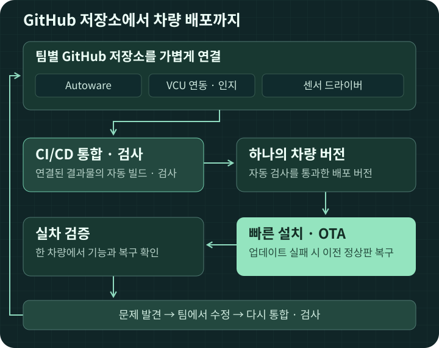

FURIVE OS · 차량 소프트웨어 배포·원격 업데이트
GitHub 저장소를 연결하고,
통합·검사는 자동으로,
차량 배포는 빠르게.¶
개발자는 개발에 집중합니다. Furive OS는 차량 배포와 업데이트를 맡습니다. 각 팀의 기존 GitHub 저장소를 최소한의 정보로 연결합니다. 연결된 결과물은 자동화된 CI/CD로 통합·검사해 하나의 차량 버전으로 만들고, 지원 차량에 빠르게 배포·원격 업데이트합니다.
GitHub 저장소 연결하기 ↗ Furive OS 한눈에 보기
가벼운 저장소 연결 · 자동 CI/CD · 빠른 배포 · OTA와 자동 복구

Furive OS를 쓰는 이유¶
🧑💻 GitHub 저장소로 가볍게 연결¶
기존 언어·프레임워크·저장소를 유지합니다. 이름·버전·실행 방법을 알려주는 최소한의 정보와 저장소 주소로 프로그램을 연결합니다.
반복을 짧게, 다음 문제를 더 일찍¶
자율주행 소프트웨어의 문제는 한 번에 모두 드러나지 않습니다. 지금 보이는 문제를 해결해야 그 뒤에 가려진 다음 문제가 보입니다. Furive OS는 배포와 검증의 반복을 짧게 만들어 다음 문제를 더 일찍 발견하고 해결하게 합니다. 팀은 이 반복을 통해 최종 자율주행 차량의 안정성과 신뢰성을 높여 갑니다.
한 번 연결하고 검증한 차량·센서 구성을 같은 종류의 차량에 신속하고 안전하게 반복 적용하는 것이 목표입니다. Furive OS가 임의의 모든 차량을 자동으로 지원하는 것은 아닙니다.
제품의 전체 흐름과 기본 보안·테스트 범위, 패키지·플랫폼·PC 구성의 관계는 Furive OS 한눈에 보기에서 이어서 볼 수 있습니다.
어디서 시작하시나요?¶
처음부터 모두 읽을 필요는 없습니다. 받은 자료와 지금 할 일에 맞는 경로를 선택하세요.
화면으로 익히는 운용¶
실제 화면의 위치와 작업 순서를 함께 설명합니다. 필요한 기능의 가이드 하나를 여세요.
AUTONOMY
Launcher¶
지도와 실행 설정을 확인하고 Autoware를 시작합니다.
PACKAGES
Package Manager¶
문제가 있는 프로그램을 찾고 상태와 로그를 확인합니다.

UPDATES
OTA Updater¶
현재 버전부터 새 버전 적용과 이전 정상판 복구까지.
SYSTEM
System Manager¶
PC 자원과 연결 상태를 확인하고 운용 설정을 바꿉니다.
🎥 DLS — 녹화·세션·재생 · 🚐 MGMT — 차량 상태·진단 · 🗺️ HMI — 주행 정보·3D 인지
화면은 사용 설명서용 예시입니다. 실제 표시 내용은 설치 버전과 차량 플랫폼에 따라 달라집니다.
개발과 구조, 더 알아보기¶
🧭 구조와 구현¶
📄 오프라인에서 읽을 PDF 설명서
PDF는 생성 시점의 문서와 화면을 묶은 스냅샷입니다. 최신 CLI와 현재 작업 절차는 웹 가이드를 기준으로 합니다.
| 설명서 | 다운로드 |
|---|---|
| 모든 화면의 통합 설명서 | Furive OS PDF |
| Autoware 실행·빌드 | Launcher PDF |
| 프로그램 상태·로그 | Package Manager PDF |
| 업데이트·복구 | OTA Updater PDF |
| PC 자원·설정 | System Manager PDF |
| 차량 상태·진단 | MGMT PDF |
| 주행 정보·3D 인지 | HMI PDF |
| 녹화·세션·NAS | DLS PDF |
문서를 수정하려면 작성·사이트 관리 안내를 확인하세요.
reports/와 lotte-first-inspection/은 당시 조사 기록이며, 현재 절차는 이 가이드를 따릅니다.